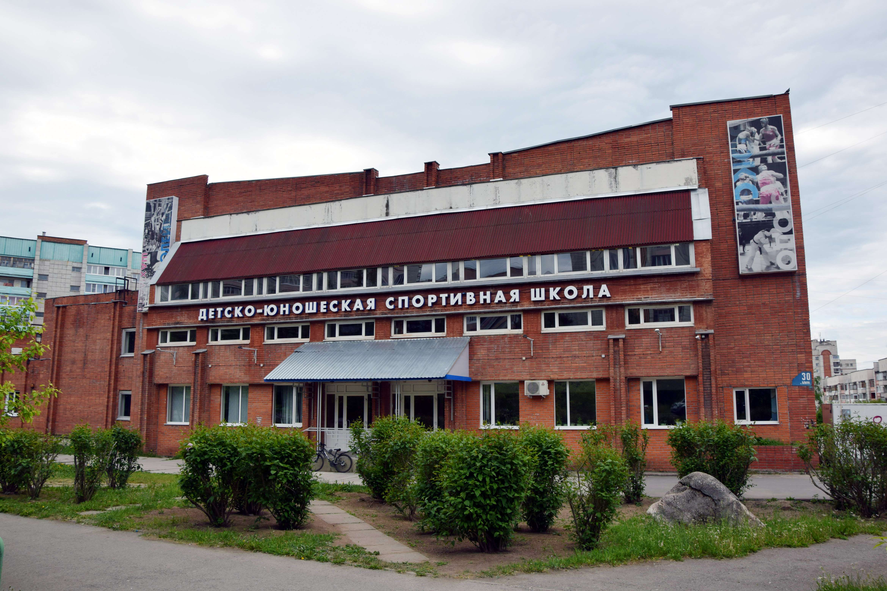

Детская юношеская спортивная школа  Google Maps
Google Maps

В 1970 году решением исполкома горсовета народных депутатов при ГОРОНО бала открыта Детско-юношеская спортивная школа. В школе было всего 2 отделения: баскетбола и художественной гимнастики. Сегодня в школе – 7 отделений:
- 1983 год - открыто отделение дзюдо;
- 1992 год - открыто отделение волейбола;
- 1993 год - открыто отделение бокса;
- 1997 год - открыто отделение шахмат;
- 2004 год - открыто отделение пауэрлифтинг.
Директор МБУ ДО ДЮСШ: Терещенко Игорь Александрович